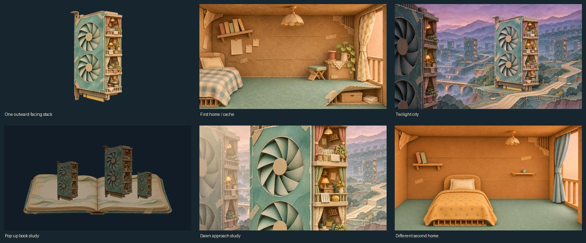
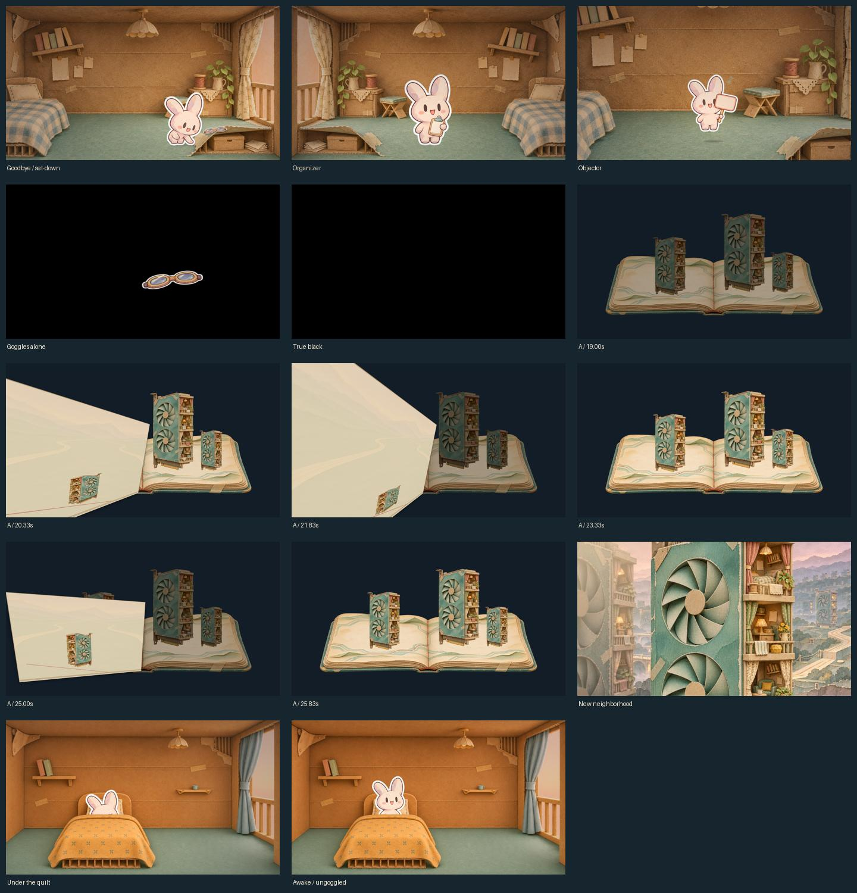
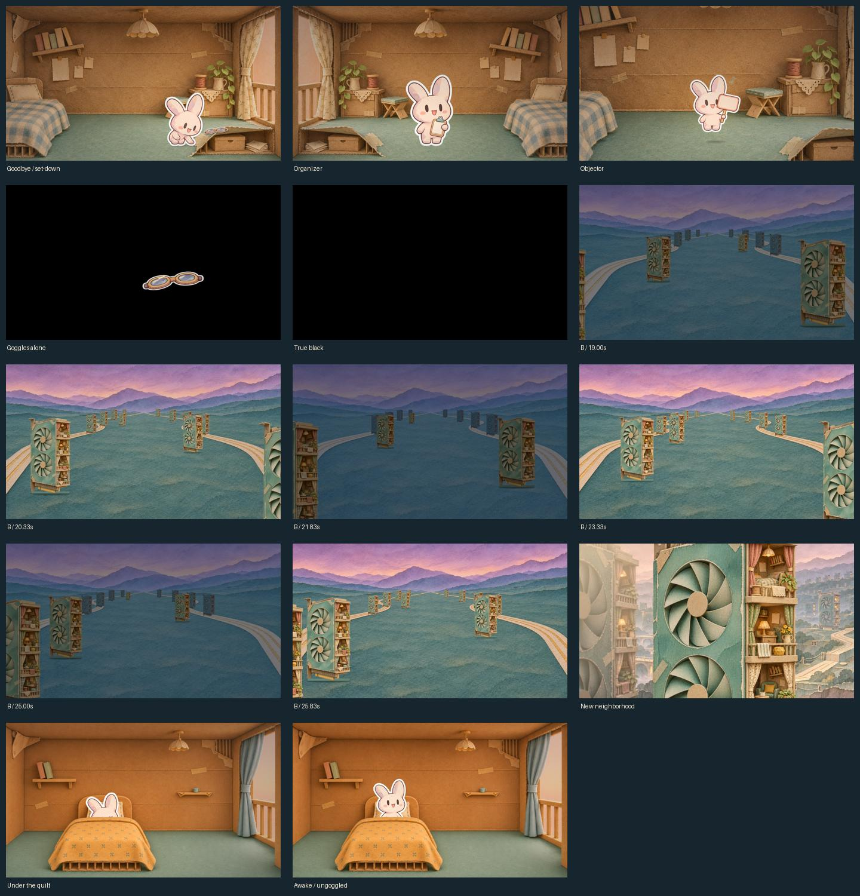
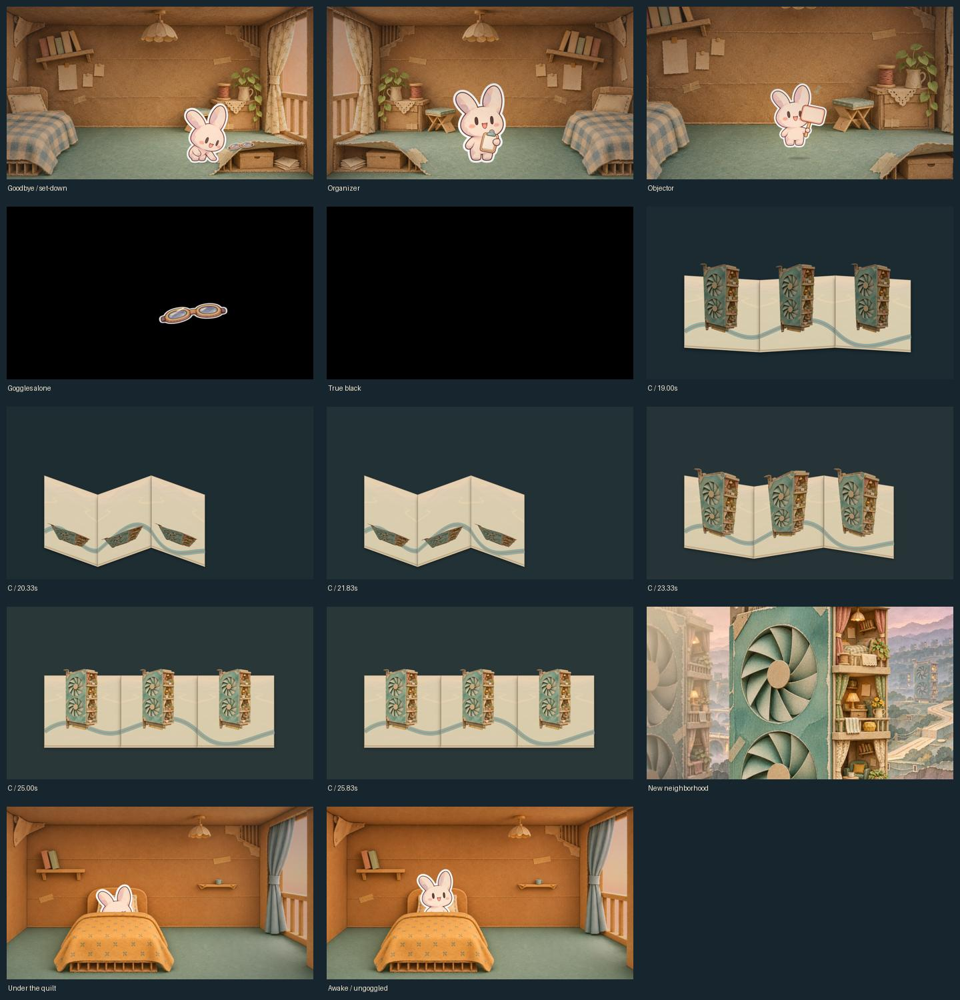
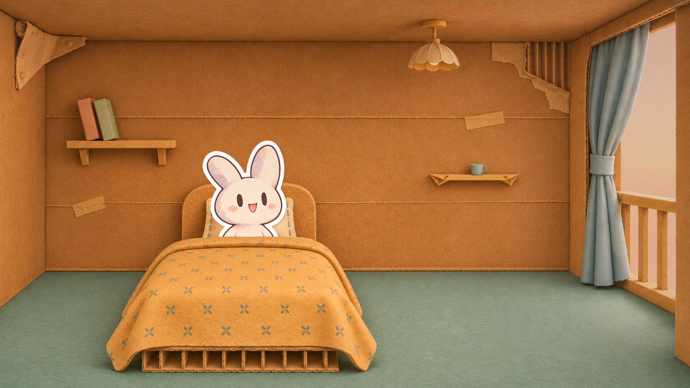
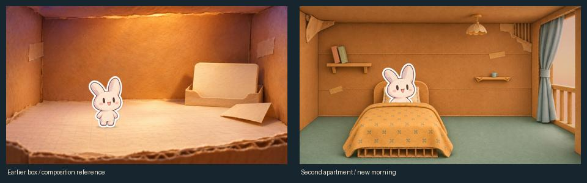

SWARM SONG · MILESTONE 4 · ART-DIRECTION PROPOSALSThe Pages Between Us
One small civilization falls quiet. Its memory survives in paper. Somewhere else, one little bunny wakes.
Three economical animatics, each31seconds at1080p/30fps. Same continuous master excerpt126–157s; no music edits. Both reviewers recommend A as a direction, with B as fallback. All remain below the full cinematic gate. Architecture and expression studies await visual approval; motion and musical pacing remain unverified. The fresh critique is preserved alongside the more favorable first assessment.
A small civilization, inside the machine
All apartments stack inside a GPU slab. Their verandas face outward from one edge; floor and ceiling slabs keep neighbors unseen. Tiny belongings make each home feel inhabited.

A · The Pages Between Us
A self-turning history book holds the familiar architecture. Four leaves accelerate, then settle toward a new morning.
Representative frames

B · The Endless GPU Landscape
A low forward passage through repeated homes changes the scale from distant civilization to intimate life.
Representative frames

C · The World Folds into Memory
Connected paper panels flatten and unfold along a shared road and thread. A deliberate graphic folding study.
Representative frames

A new room, a familiar small face

No old notes or goggles appear here. The inheritance happens later. The waking head uses the approved baseline; one closed-eye expression study and the illustrated quilt supply the sleeping beat.
Earlier composition reference and current awakening

The opening film is not yet locked. This is a composition reference, not a claim that both final film shots already exist.
Review boundaries
These are treatments to choose between, not completed film sequences. Per-treatment findings, fresh ranking, technical checks, audio evidence, reproduction, generation prompts.